[CO] PCL Historicals and WS2
Issue number 565
karaschechtman opened this issue on July 1, 2020 at 7:26 pm
Labels PCL/SVP Historicals
Starting May 15, CO reports four different numbers about deaths: “deaths among cases,” confirmed/probable breakdowns for “deaths among cases,” and “deaths due to COVID-19.” Deaths among cases captures information about all deaths in probable or confirmed COVID cases (e.g. determined by testing data for confirmed, syndromic or epidemiological evidence for probable), while “deaths due to COVID-19” tracks cases where COVID is listed on the death certificate.
{kind=link}
Right now, we fill out our columns like this: Deaths (confirmed+probable): “deaths among cases” Deaths (confirmed): “deaths among cases (confirmed)” Deaths (probable): “deaths among cases (probable”
However, to maintain consistency with other states (e.g. ND) that provide data about whether COVID was the cause of death , we do not want to track “deaths among cases” but “deaths due to COVID-19,” which tracks death certificate data. Hence for May 15 onward, we are going to switch to:
Deaths (confirmed+probable): “deaths due to COVID 19” Deaths (confirmed): no data (since “deaths due to COVID-19” is not broken down to confirmed/probable) Deaths (probable): "no data (since “deaths due to COVID-19” is not broken down to confirmed/probable)
We will add back the data for “deaths among cases (confirmed)” at a later date when we add a column for deaths w/ positive lab tests but not necessarily COVID as a cause of death on a death certificate.
Comments
Updating historicals for CO (from screenshots, account for 1 day lag due to late CO update time, e.g. our update 7/1 picked up 6/30 6:30 pm data):
{kind=link}
Before 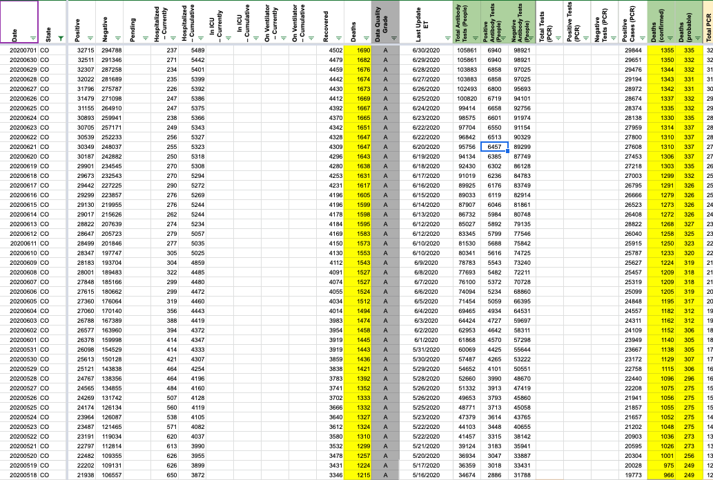 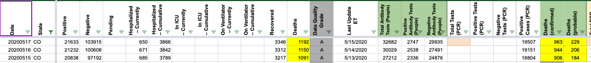
After 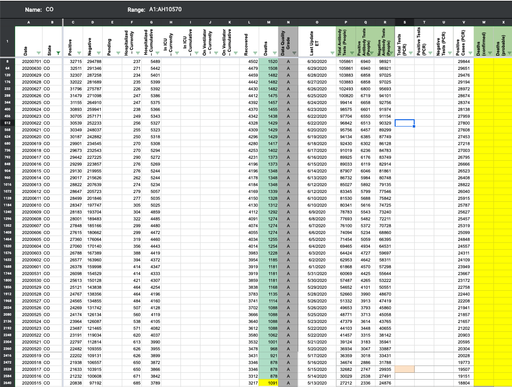
CO also provided its confirmed/probable breakdown before it provided figures on deaths due to COVID-19 on 5/15. We record these values sporadically between 4/29-5/3 and 5/12-5/15. These confirmedvalues still reflect confirmed deaths within “deaths in COVID-19 cases” (any lab-confirmed death) so I am deleting them. Before: 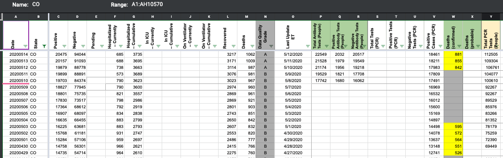 After 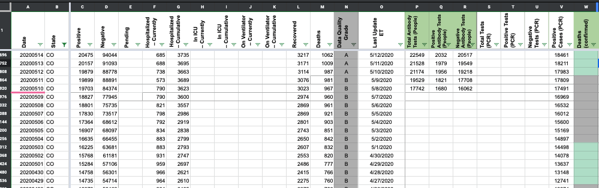
Adding public note: “On 5/15 (which we caught on our update 5/16), Colorado started providing a new figure for deaths where COVID-19 is listed on the death certificate, in addition to the figure it already provided, deaths among laboratory-confirmed and probable cases (whether or not COVID was a cause of death). On 7/1, we revised our historical data to reflect the deaths certificate figure instead of the deaths among cases. As such, it appears as if there is a drop from 1091 deaths on 5/15 to 878 on 5/16 in our data.”
Updating CO tooltips and values Before 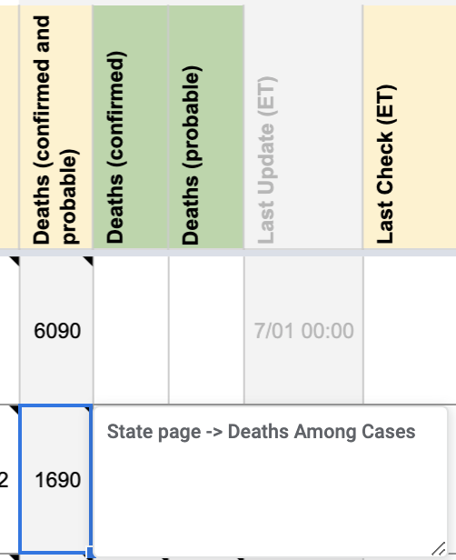 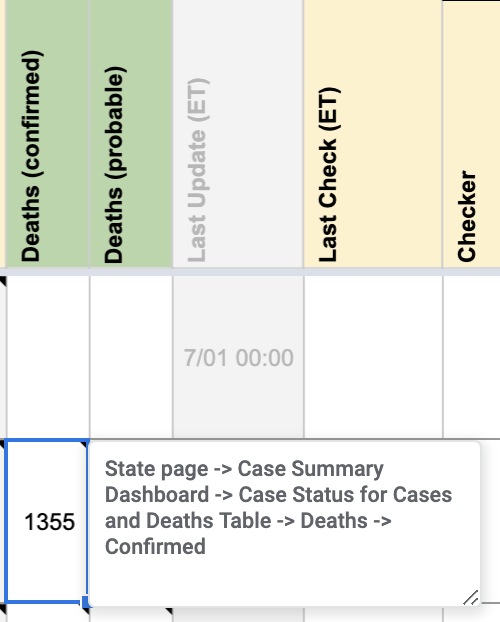 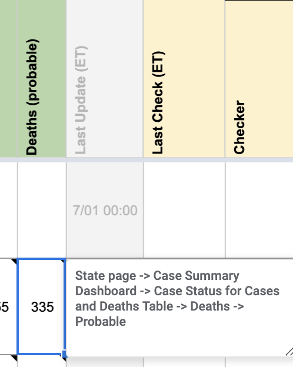
After 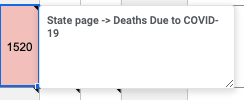 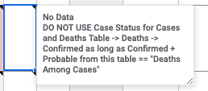 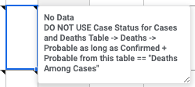
NOTE: we will need to add a private note to explain the drop. I will draft it once I’ve fixed all the historicals.